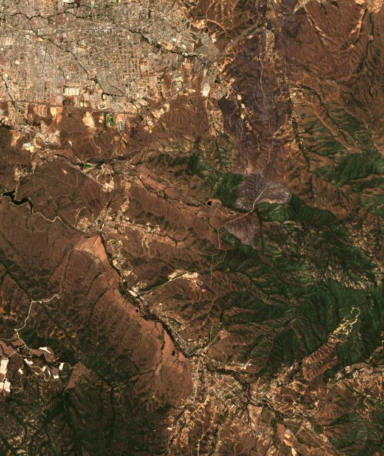
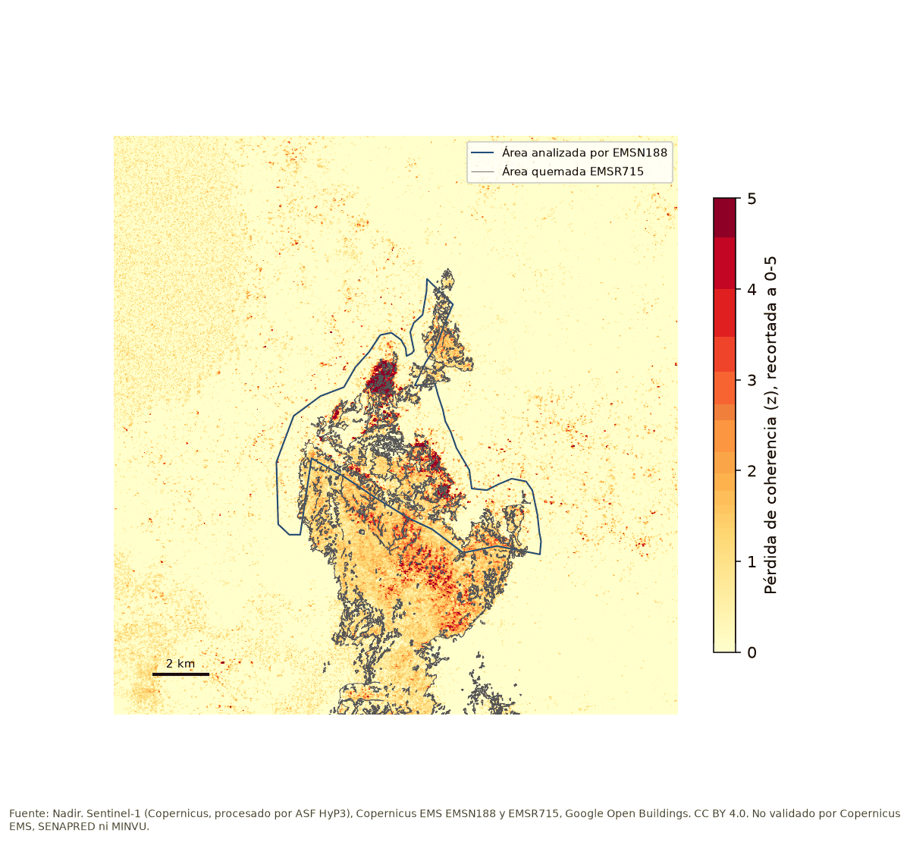
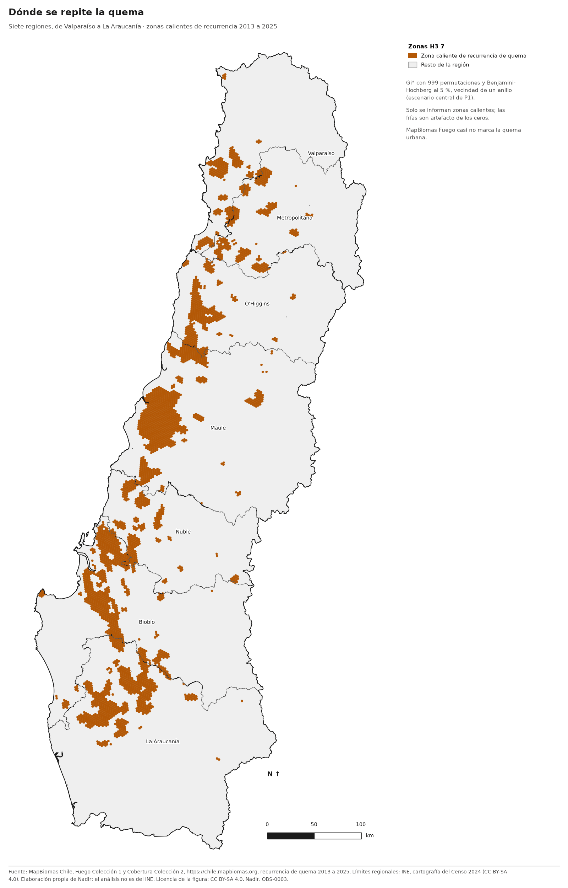
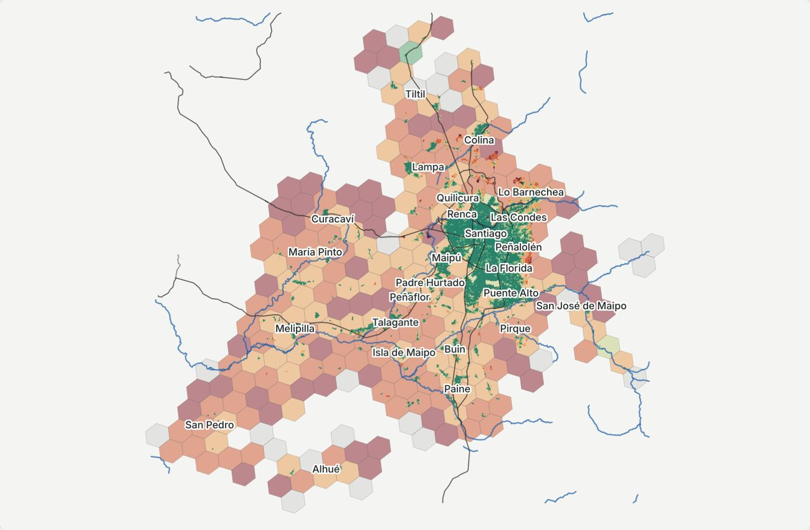

Incendios
-

Severidad del incendio de Viña del Mar, febrero de 2024
Severidad del fuego estimada con imágenes Sentinel-2, con intervalos y validación, y capas de contexto con su procedencia.
9.211,9 ha
quemadas, calibrado localmente con Copernicus EMSR715. Intervalo del 95 %, 8.634,5 a 9.582,1 ha.
Pasó a ser la cifra principal después de ver los resultados (enmienda del 11 de noviembre de 2026). La regla original sigue en la página del caso.
-

Daño a edificaciones en el incendio de Viña del Mar, febrero de 2024
¿Qué edificaciones dañadas ve el radar que el satélite óptico no ve?
79,4 %
de las edificaciones con daño según Copernicus EMS aparecen como daño probable en el radar Sentinel-1. Intervalo del 95 %, 59,9 % a 89,7 %.
Copernicus EMS, SENAPRED y MINVU no validaron estos resultados.
-

Capacidad de respuesta frente al peligro de incendio
Dónde se repite el fuego entre 2013 y 2025 y a qué tiempo de viaje quedan las compañías de bomberos y las urgencias de salud, en siete regiones, de Valparaíso a La Araucanía.
Exclusión financiera
-

Contiene información de OpenStreetMap, disponible bajo ODbL. Desiertos financieros de la Región Metropolitana
¿Quién vive lejos, a pie, del punto más cercano para sacar dinero?
5,9 %
de la población, 429.400 personas, vive a más de 15 minutos a pie del punto más cercano, sea sucursal, cajero o Caja Vecina.